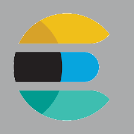
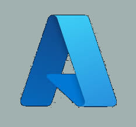

ASOS Project
Test Results History
This project produced a history of test environment stability (though automated test results), by displaying weekly results as both line-graph and pie chart and tables or errors and log messages.
Technologies used include:
-  